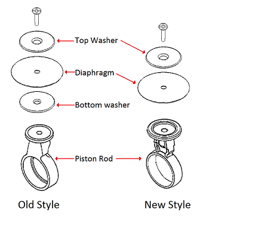
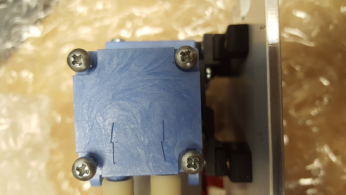
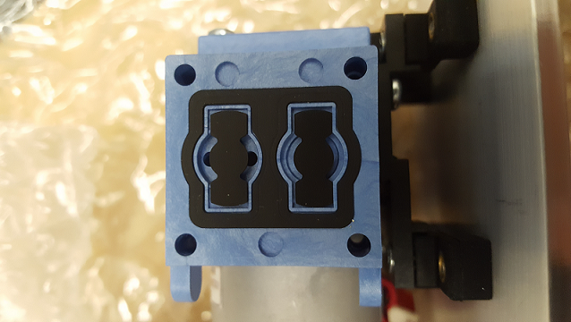
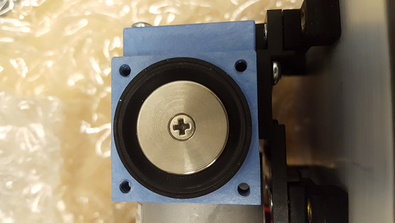
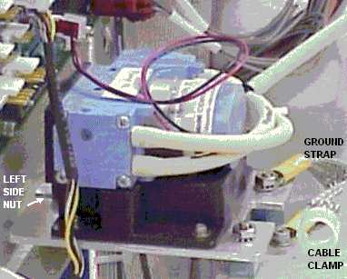
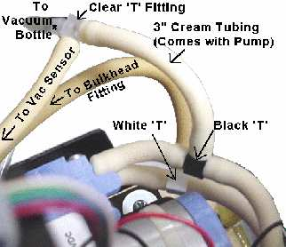

Repairing or Replacing Vacuum Pump
Note: The repair kit is compatible with old style and new style vacuum pumps; verify which style pump is being repaired. The
new style pump only uses one washer per head; the
old style pump
uses two washers per head.
Note: The extra spacer washer from the repair kit is not needed for Access 2 vacuum pumps.

- Confirm that the instrument is not running any tests or maintenance procedures.
-
Remove the precision pump.
Caution: All service personnel that handle material sensitive to electrostatic discharge (ESD) used to analyze, repair, or test instruments and test equipment must use ESD precautions and be aware of all ESD policies. Refer to the North American Commercial Operations (NACO), Kit Testing, Handling, and Storage of Electrostatic Discharge (ESD) Service Devices for the Corporate procedure and policy regarding ESD.
- Power off the instrument. Open the top and front covers.
-
Disconnect these connectors from the fluidics interface PCB:
- J3 - Precision Pump Home Sensor
- J26 - Precision Pump Motor Power
- Mark the cable connector location for reinstallation.
-
Using a 3/32-in Allen wrench, loosen the two captive screws on the right side of the fluidics manifold that secure the precision pump.
Caution: Place towels underneath the pipettor tip to absorb leaking wash buffer.
- Lift the pump up and away from the manifold.
- Set the pump aside for installation later.
-
Remove the wash pump.
-
Disconnect these connectors from the fluidics interface PCB:
- J8 - Pump Home Sensor
- J23 - Wash Pump Motor Power
- Mark the cable connector location for reinstallation.
-
Using a 3/32-in Allen wrench, loosen the two captive screws on the right side of the fluidics manifold that secure the precision pump.
Caution: Place towels underneath the pipettor tip to absorb leaking wash buffer.
- Lift the pump up and away from the manifold.
- Set the pump aside for installation later.
-
Disconnect these connectors from the fluidics interface PCB:
-
Remove the vacuum pump.
- Disconnect the vacuum pump electrical connector from J18 on the fluidics interface PCB.
-
Disconnect the input and output tubing from the two ports on the vacuum pump.
Note: The brushless vacuum pump has a black T-fitting for the inlet port and a white T-fitting for the outlet port.
- Remove the three nuts that hold the vacuum pump in place, and then remove the pump.
- If there is a vacuum pump electrical filter, either remove it or leave it in place. The filter is not needed for the brushless vacuum pump.
-
Repair the Vacuum Pump when possible to avoid replacement of the entire assembly. Use the table below to determine when the pump is eligible for repair as opposed to replacement:
Repair the pump with A44234 when: Replace the pump with a new assembly when: Vacuum pressure fails to reach specification and/or vacuum errors are present, but the pump is NOT making excessive noise or visibly corroded internally. The vacuum pump is making excessive noise while running OR the pump internals are visibly corroded which are not replaced as part of the repair kit. Note: Each pump has two heads that can be repaired. Be sure to replace all components, component material used in repair kit has improved corrosion resistance.-
Remove the four screws securing the cover and remove the cover. The tubing does not have to be removed.

-
Carefully remove the second cover. Note the orientation of the cover when removing and make sure not to lose the gaskets.

-
Remove the screw holding the washers and diaphragm in place.

- Replace components and reassemble in reverse order. Refer to above note to verify style of pump.
-
Remove the four screws securing the cover and remove the cover. The tubing does not have to be removed.
-
Install the repaired or new vacuum pump.
-
Remove the screw securing the cable clamp for the fluidics manifold valve motors and home sensors cables. Install the ground strap underneath the cable clamp.

Note: Assemble the hardware in this order: External tooth washer, ground strap, cable clamp, flat washer, and screw. -
Install the vacuum pump over the three mounting studs.
Note: Thread the left-side nut onto the stud, and slide the vacuum pump mounting plate under the nut.
- Install the loose end of the ground strap onto the closest vacuum pump mounting stud.
- Install the two remaining vacuum pump mounting nuts, and then tighten all three nuts.
-
Remove the screw securing the cable clamp for the fluidics manifold valve motors and home sensors cables. Install the ground strap underneath the cable clamp.
-
Reinstall the vacuum pump tubing that was removed earlier.
-
Identify the short tubing loop going between the black and white T-fittings on the new brushless vacuum pump. Disconnect the tube from the white T-fitting.

-
Connect the tubing from the bulkhead connection and external waste bottle to the white T-fitting.
The white T-fitting is the output side of the vacuum pump.
- Connect the short tubing loop from the black T-fitting, which is the vacuum side of the vacuum pump, to the T- fitting that goes to the pressure transducer and internal vacuum bottle.
- Connect the vacuum pump power connector to connector J18 on the fluidics interface PCB.
-
Identify the short tubing loop going between the black and white T-fittings on the new brushless vacuum pump. Disconnect the tube from the white T-fitting.
-
Install the wash pump.
- Confirm the presence of the o-ring for sealing the wash pump to the manifold. Align the wash pump with the manifold block, and slide the pump into place.
- Using an 3/32-in Allen wrench, tighten the Allen screws to secure the wash pump.
-
Connect these connectors to the fluidics interface PCB:
- J8 - Pump Home Sensor
- J23 - Wash Pump Motor Power
-
Install the precision pump.
- Confirm the presence of the o-ring for sealing the precision pump to the manifold. Align the precision pump with the manifold block, and slide the pump into place.
- Using a 3/32-in Allen wrench, tighten the Allen screws to secure the precision pump.
-
Connect these connectors to the fluidics interface PCB:
- J3 - Precision Pump Home Sensor
- J26 - Precision Pump Motor Power
-
Verify vacuum pump operation.
Note: The air filter bottle can become clogged with dried buffer residue causing slow vacuum increase or limiting maximum vacuum. Replace the air filter if it blocks the air discharge from the vacuum pump.
- Power on the instrument and allow the instrument to initialize.
- From the Main Menu, select Diagnostics > Device Diagnostics > Digital Devices.
- Select the Pump On and Probe Wash Valve options. Confirm that the vacuum reaches a minimum of 450 mm Hg.
- Clear the Pump On option and confirm that the vacuum does not drop by more than 50 mm Hg within 30 seconds with the valve on. If the vacuum drops more than 50 mm Hg in 30 seconds, then inspect the vacuum system for leaks (fittings, vacuum bottle cap, tubing).
- With the vacuum valve still closed, power off the vacuum pump and confirm the vacuum does not drop by more than 50 mm Hg within 30 seconds.
- Clear the Probe Wash Valve option and confirm that the vacuum immediately falls to almost zero.
- Optional - the automated Vacuum Test can also be run. Select F2 Vacuum Test to run the test.
- Prime the dispense probes and pipettor, four cycles each to prime all the air out of the pumps that were removed and reinstalled.
-
Verify system operation.
-
Perform the required system verification.
Note: Refer to the Verification of Preventive Maintenance document.
- Contact your local support organization with any questions or concerns.
-
Perform the required system verification.